[TOC]
C++ 动态内存管理
C++的动态内存管理是一个强大但复杂的特性。良好的内存管理对于编写高效、稳定的C++程序至关重要。本章探讨C++中动态内存的分配、使用和释放方法，特别关注现代C++中智能指针的应用。
本节要点
- 首选使用标准库智能指针（
make_shared/make_unique）管理动态资源，避免直接使用裸new/delete。 shared_ptr实现共享所有权；unique_ptr实现独占所有权；weak_ptr用于观察shared_ptr管理的对象且不增加引用计数，常用于打破循环引用。- 管理动态数组时，优先使用
unique_ptr<T[]>或标准容器（如std::vector<T>）；若使用shared_ptr管理数组，必须提供自定义删除器。 std::allocator可将内存分配与对象构造分离，适用于需要精细控制内存和对象构造的场景。
一、智能指针
智能指针是C++标准库提供的模板类，用于自动管理动态分配的内存，有效防止内存泄漏和指针悬挂等常见问题。
- 定义在
<memory>头文件中 - 基于RAII（资源获取即初始化）原理设计
- C++11引入了三种智能指针：
shared_ptr、unique_ptr和weak_ptr
1. shared_ptr
shared_ptr是一种共享所有权的智能指针，多个shared_ptr可以指向同一个对象，当最后一个指向该对象的shared_ptr被销毁时，对象才会被释放。
基本用法
// 创建shared_ptr
shared_ptr<string> p1; // 默认初始化为空指针
shared_ptr<list<int>> p2; // 指向list<int>的空指针
shared_ptr<int> p3 = make_shared<int>(42); // 指向值为42的int
shared_ptr<string> p4 = make_shared<string>("Hello"); // 指向字符串
// 使用shared_ptr
if (p4) { // 检查p4是否为空
cout << *p4 << endl; // 解引用智能指针
cout << p4->size() << endl; // 访问指向对象的成员
}
- 默认初始化的智能指针保存着一个空指针
- 解引用一个智能指针返回它指向的对象
make_shared函数是创建shared_ptr的首选方式，它在单次内存分配中同时创建对象和控制块
shared_ptr操作
shared_ptr提供了多种操作方法来管理共享对象：

.png)
引用计数
shared_ptr通过引用计数机制跟踪有多少个智能指针共享同一个对象：
auto p1 = make_shared<int>(42); // 引用计数为1
auto p2 = p1; // 引用计数增加到2
{
auto p3 = p1; // 引用计数增加到3
} // p3离开作用域，引用计数减为2
p1.reset(); // p1不再指向该对象，引用计数减为1
// 当p2离开作用域，引用计数变为0，对象被自动删除
1.1 直接管理内存
除了使用智能指针外，C++也允许程序员直接管理动态内存，但这要求程序员自行确保内存的正确释放，防止内存泄漏和悬挂指针问题。
1.1.1 new 和 delete 运算符
new运算符用于动态分配内存，delete运算符用于释放动态分配的内存：
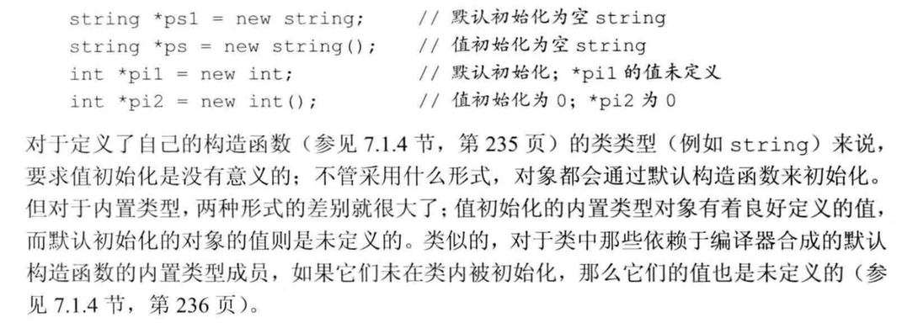
初始化方式：
// 内置类型的初始化
new int; // 默认初始化，值未定义
new int(); // 值初始化为0
new int(42); // 初始化为42
// 类类型的初始化
new string; // 默认初始化为空字符串
new string(); // 同上，值初始化
new string("Hello"); // 初始化为"Hello"
// C++11的列表初始化
new int{42}; // 初始化为42
new vector<int>{1, 2, 3, 4}; // 初始化为包含1,2,3,4的vector
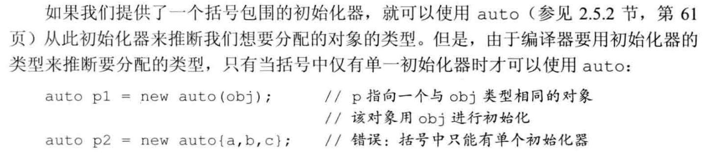
内存释放：
int* p1 = new int(42); // 分配一个int
delete p1; // 释放int
int* p2 = new int[10]; // 分配10个int的数组
delete[] p2; // 释放数组
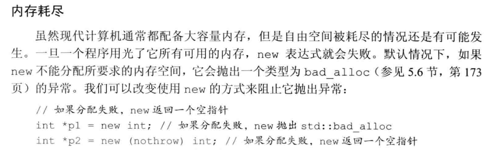
1.1.2 定位new表达式（placement new）
定位new表达式允许在预先分配的内存上构造对象，或者传递额外参数给分配函数：
示例：
// 使用nothrow选项
int* p = new(nothrow) int(42); // 如果分配失败，返回nullptr而非抛出异常
// 在预先分配的缓冲区上构造对象
char buffer[sizeof(int)];
int* p = new(buffer) int(42); // 在buffer上构造int对象
1.2 智能指针和原始指针的结合使用
智能指针需要与传统的原始指针交互，尤其是与那些使用C风格内存管理的代码协作时。
从原始指针创建智能指针
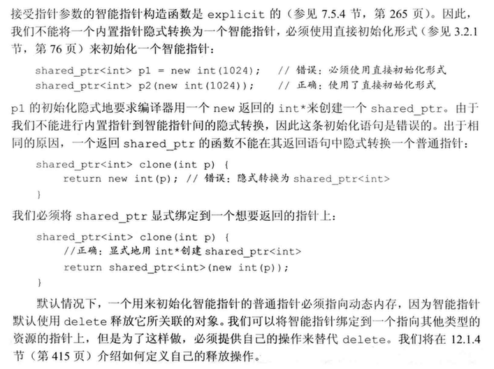
// 使用原始指针初始化智能指针
int* raw_ptr = new int(42);
shared_ptr<int> sp(raw_ptr); // shared_ptr接管内存管理
// 推荐使用make_shared而不是上述方式
auto sp2 = make_shared<int>(42); // 更安全、更高效
自定义删除器
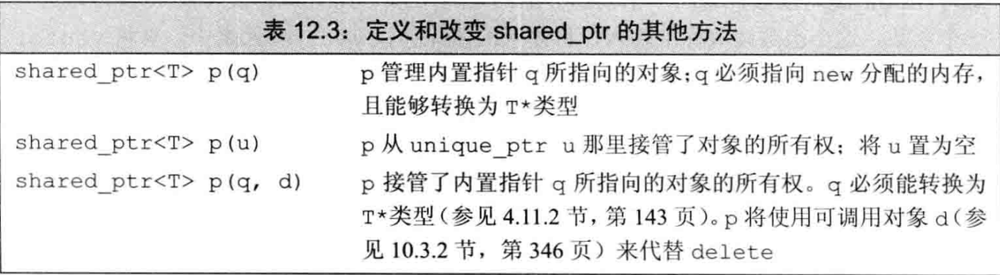
// 为需要特殊清理的资源定义删除器
auto deleter = [](FILE* fp) { fclose(fp); };
shared_ptr<FILE> fp(fopen("data.txt", "r"), deleter);
// 当fp离开作用域，会调用deleter来关闭文件
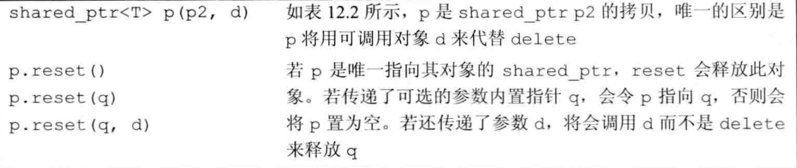
[!WARNING]
所有权转移注意事项
一个动态分配的对象应该只由一种智能指针类型管理。混合使用不同类型的智能指针，或者混用智能指针和原始指针管理同一对象，会导致多重释放或悬挂指针问题。
[!WARNING]
谨慎使用get方法
若使用
get()方法获取的原始指针初始化另一个智能指针，会出现两个独立的智能指针（计数器不共享）指向相同的内存，导致未定义行为，通常是对象被释放两次。shared_ptr<int> p1(new int(42)); // 错误用法：会导致double free shared_ptr<int> p2(p1.get()); // p1和p2各自维护引用计数

1.3 reset和智能指针的安全修改
reset方法允许智能指针指向新对象，同时正确处理原对象的引用计数：
// 安全地修改shared_ptr指向的对象
if (!p.unique()) {
p.reset(new string(*p)); // 如果有其他shared_ptr指向同一对象，先创建副本
}
*p += newVal; // 现在确保p是唯一指向该对象的指针，可以安全修改
// 重置为空或其他对象
shared_ptr<int> p1(new int(42));
p1.reset(); // p1现在为空
p1.reset(new int(1024)); // p1指向新值1024
使用场景示例
// 实现写时复制的字符串类
class CopyOnWriteString {
private:
shared_ptr<string> text;
public:
CopyOnWriteString(const string& s) : text(make_shared<string>(s)) {}
void modify(const string& newText) {
if (!text.unique()) // 如果有其他对象共享此文本
text.reset(new string(*text)); // 创建副本
*text = newText; // 修改文本
}
string get() const { return *text; }
};
2. 异常安全和内存管理
智能指针在异常处理中特别有用，因为它们能够自动释放不再需要的内存，防止内存泄漏。
对比原始指针和智能指针在异常情况下的行为：
// 使用原始指针 - 可能导致内存泄漏
void f() {
int *ip = new int(53);
// 如果这里发生异常且未在f中被捕获
// ip指向的内存永远不会被释放
delete ip; // 如果前面有异常，这行代码不会执行
}
// 使用智能指针 - 异常安全
void g() {
shared_ptr<int> sp(new int(53));
// 即使发生异常，sp也会被正确销毁
// sp指向的内存会被自动释放
}
智能指针也是处理那些具有复杂清理要求（如文件句柄、网络连接等）的资源的理想选择。
[!IMPORTANT]
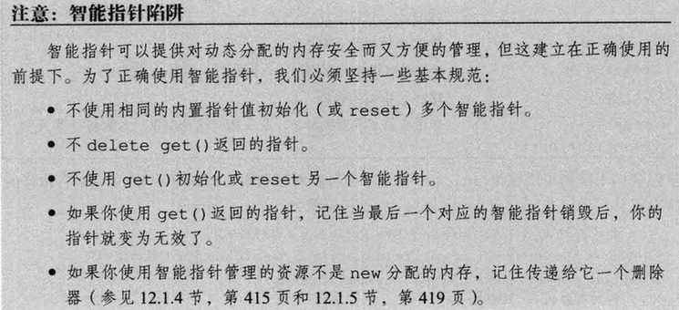
使用RAII（资源获取即初始化）模式和智能指针是现代C++中管理资源的最佳实践。
3. unique_ptr
unique_ptr是一种独占所有权的智能指针，不允许多个指针指向同一对象。它提供了对动态分配资源的专属访问。
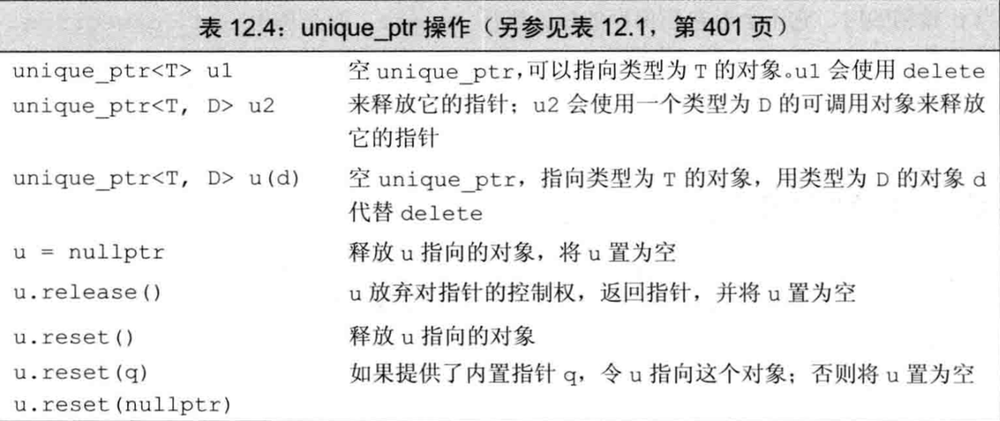
3.1 基本用法
// 创建unique_ptr
unique_ptr<int> p1(new int(42));
unique_ptr<string> p2 = make_unique<string>("Hello"); // C++14引入的函数
// 使用unique_ptr
if (p1) {
cout << *p1 << endl; // 访问指向的对象
}
// 释放所有权
p1.reset(); // 释放对象，p1变为空
p2.reset(new string("World")); // 释放旧对象，指向新对象
3.2 使用自定义删除器
unique_ptr支持自定义删除器，但删除器类型是智能指针类型的一部分。
1. 使用函数对象作为删除器
#include <iostream>
#include <memory>
// 自定义删除器
struct CustomDeleter {
void operator()(int* ptr) const {
std::cout << "CustomDeleter called\n";
delete ptr;
}
};
int main() {
std::unique_ptr<int, CustomDeleter> u1(new int(42)); // 使用自定义删除器
// 当u1离开作用域时，会调用CustomDeleter
return 0;
}
2. 使用lambda表达式作为删除器
#include <iostream>
#include <memory>
int main() {
auto deleter = [](int* ptr) {
std::cout << "Lambda deleter called\n";
delete ptr;
};
std::unique_ptr<int, decltype(deleter)> u2(new int(42), deleter); // 使用lambda删除器
// 当u2离开作用域时，会调用lambda删除器
return 0;
}
3.3 所有权转移
由于unique_ptr不共享所有权，复制是不允许的，但可以通过移动语义转移所有权：
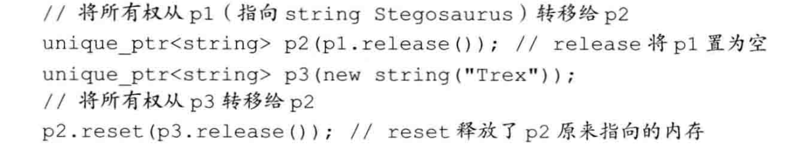
unique_ptr<int> p1(new int(42));
// unique_ptr<int> p2 = p1; // 错误：不允许复制
// 转移所有权
unique_ptr<int> p3 = std::move(p1); // p1现在为空，p3接管了资源
p1 = std::move(p3); // 所有权再次转移回p1，p3现在为空
3.4 传递和返回unique_ptr
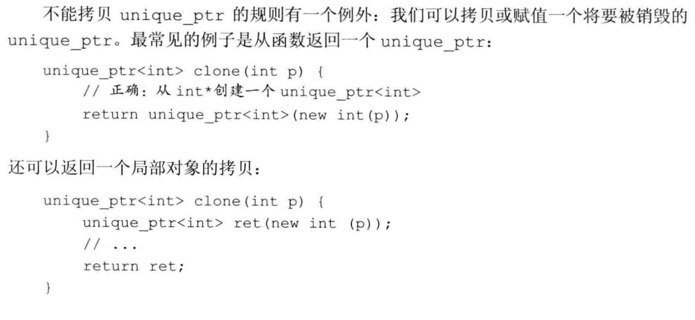
// 返回unique_ptr
unique_ptr<int> createInt(int value) {
return unique_ptr<int>(new int(value)); // 可以返回临时unique_ptr
// 或者更简洁地
return make_unique<int>(value); // C++14
}
// 使用返回的unique_ptr
auto p = createInt(42);
[!NOTE]
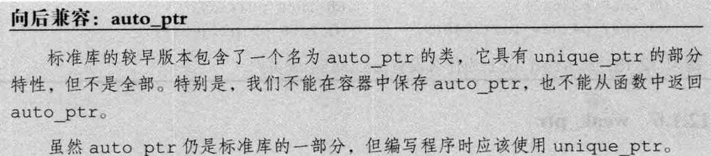
从C++14开始，推荐使用
std::make_unique创建unique_ptr，这样更安全且更简洁。
4. weak_ptr
weak_ptr是一种不控制所指向对象生存期的智能指针，它指向由shared_ptr管理的对象，但不会影响对象的引用计数。

4.1 基本用法
weak_ptr主要用于解决循环引用问题，以及在不确定对象是否还存在时安全地访问该对象。
// 创建weak_ptr
shared_ptr<int> sp = make_shared<int>(42);
weak_ptr<int> wp = sp; // wp观察sp指向的对象但不增加引用计数
// 检查对象是否存在并使用
if (shared_ptr<int> locked = wp.lock()) {
// 对象仍然存在
cout << "Value: " << *locked << endl;
} else {
// 对象已被销毁
cout << "Object no longer exists" << endl;
}
4.2 使用lock方法安全访问对象
lock方法是weak_ptr的核心功能，它尝试提升weak_ptr为shared_ptr：
#include <iostream>
#include <memory>
int main() {
std::shared_ptr<int> sp = std::make_shared<int>(42);
std::weak_ptr<int> wp = sp;
// 对象仍存在时的lock
if (auto locked_sp = wp.lock()) {
std::cout << "Locked shared_ptr value: " << *locked_sp << std::endl;
std::cout << "Original shared_ptr use count: " << sp.use_count() << std::endl;
std::cout << "Locked shared_ptr use count: " << locked_sp.use_count() << std::endl;
} else {
std::cout << "The managed object has been deleted." << std::endl;
}
// 销毁原始shared_ptr
sp.reset();
// 对象已销毁时的lock
if (auto locked_sp = wp.lock()) {
std::cout << "Object still exists." << std::endl;
} else {
std::cout << "The managed object has been deleted." << std::endl;
}
return 0;
}
4.3 lock方法的工作原理
std::weak_ptr::lock方法返回一个std::shared_ptr，具有以下特性：
如果原对象存在：返回一个新的
shared_ptr，该指针与其他指向同一对象的shared_ptr共享所有权。引用计数会增加，反映新的shared_ptr的存在。如果原对象已销毁：返回一个空的
shared_ptr（等价于默认构造的shared_ptr）。临时对象处理：如果调用
wp.lock()但不保存返回值，创建的shared_ptr会在语句结束时立即销毁，引用计数会相应减少。
4.4 解决循环引用问题
class Node {
public:
shared_ptr<Node> next; // 强引用可能导致循环引用
weak_ptr<Node> parent; // 使用weak_ptr避免循环引用
~Node() {
cout << "Node destroyed" << endl;
}
};
int main() {
auto parent = make_shared<Node>();
auto child = make_shared<Node>();
// 建立双向引用
parent->next = child;
child->parent = parent; // 使用weak_ptr避免循环引用
// 当我们释放这些指针时，对象能正确释放
// 如果都使用shared_ptr，将导致内存泄漏
return 0;
}
二、动态数组
动态数组是在运行时动态分配的一组连续的对象，其大小在编译时不需要知道。C++提供多种管理动态数组的方式。
1. new 和数组
1.1 声明方式：
int * pia = new int [ size_t ] ;typedef int arrT [42]; int *p = new arrT; //实际和方式一等效
[!NOTE]
实际上所谓的“动态数组”并不是数组，使用new T []获得的T类型指针ptr，虽然我们可以通过ptr访问申请到的空间，但是不能对它调用
begin或end，也不能用范围 for 语句来处理动态数组中的元素。
1.2 初始化：
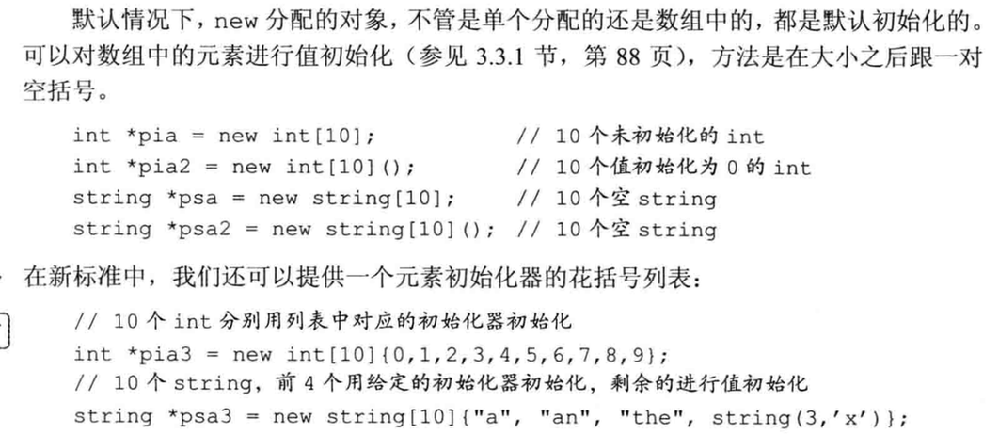
[!IMPORTANT]
[!IMPORTANT]
不能用 auto 分配数组
auto p = new auto[10](1) //错误[!NOTE]
new T[0]是合法的
1.3 释放动态数组
// 错误用法示例（不要这样做，会导致 double free）
// shared_ptr<int> p1(new int(42));
// 错误示例（不要这样做）：
// shared_ptr<int> p2(p1.get()); // p1 和 p2 各自认为自己拥有该裸指针 -> double free
// 正确示例：
// auto p2 = p1; // 共享所有权
// weak_ptr<int> wp = p1; // 仅观察，不增加引用计数
// 正确做法：直接复制 shared_ptr 或使用 weak_ptr 来观察
{
auto p1 = std::make_shared<int>(42);
auto p2 = p1; // 正确，共享同一个控制块，引用计数安全增加
}
// 如果只想观察而不影响生命周期，可使用 weak_ptr
{
auto p1 = std::make_shared<int>(100);
std::weak_ptr<int> wp = p1; // 不增加引用计数
if (auto sp = wp.lock()) {
// 可以安全地使用 sp
}
}
>
1.4 智能指针和动态数组
使用 unique_ptr 管理 new 分配的数组。
shared_ptr<int> p1 = make_shared<int>(42); // 推荐：使用 make_shared
// 错误示例（不要这样做）：
// shared_ptr<int> p2(p1.get()); // 错误用法：p1和p2各自维护引用计数 -> double free
// 正确做法：共享所有权
auto p2 = p1; // p1 和 p2 共享引用计数
// 或者，仅想观察但不拥有：使用 weak_ptr
weak_ptr<int> wp = p1; // 不增加引用计数，仅观察
up.reset(); // 释放并删除数组（调用 delete[]）

> shared_ptr 本质上仍是一个**单一对象的指针**，因此要使用它管理动态数组，需要**自行定义删除器**。

### 2. allocator 类
> std::allocator 类定义在头文件 memory 中，它帮助我们将**内存分配和对象构造分离**开来。它提供一种类型感知的内存分配方法，它分配的内存是原始的、未构造的。
#### 2.1 new 的局限性：
**内存分配和对象构造绑定**
1. 提前分配**并初始化**了可能不需要使用的对象。
2. 对于确实要使用的对象，在初始化时进行了默认初始化，但默认初始化往往不是我们所需要的，重复赋值造成了资源浪费。
3. > [!IMPORTANT]
>
> 使得没有默认构造函数的类无法动态分配数组
#### 2.2 allocator类的使用
> std::allocator 是一个模板
````cpp
allocator<string> alloc; // 可以分配string的allocator对象
auto const p = alloc.allocate(n); // 分配 n 个未构造的 string 存储空间（未初始化）
// 需要手动构造 / 销毁 / 释放：
for (size_t i = 0; i < n; ++i)
alloc.construct(p + i, ""); // 在分配的原始内存上构造对象
// 使用完毕后，先销毁对象再释放内存
for (size_t i = 0; i < n; ++i)
alloc.destroy(p + i);
alloc.deallocate(p, n);

2.3 拷贝和填充
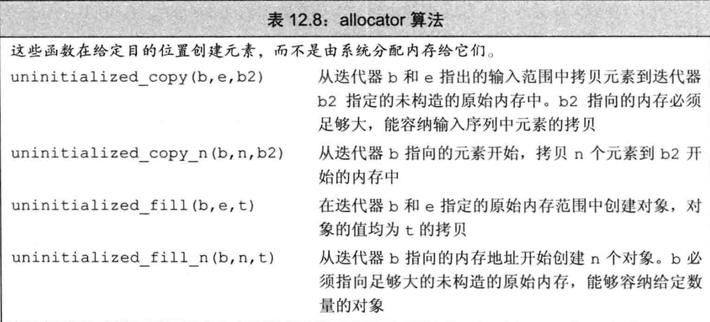